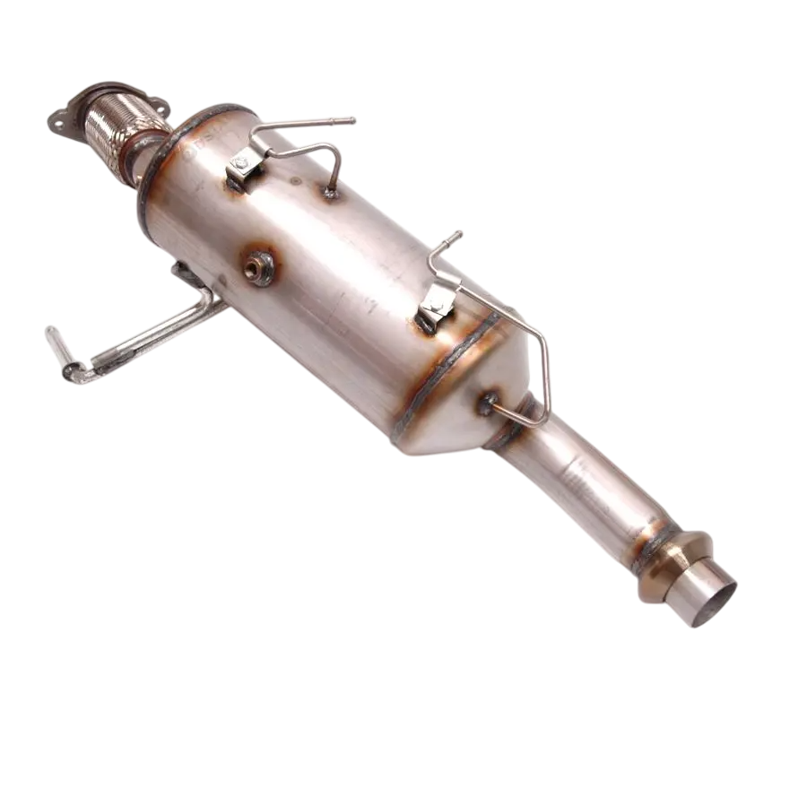

Filtro de Partículas
Mantenha o desempenho e a eficiência do seu veículo a longo prazo com o filtro de partículas automotivo, disponível por: R$ 5000,00. Este componente essencial foi desenvolvido para carros a diesel e é responsável por capturar e reter partículas de fuligem presentes nos gases de escape, reduzindo as emissões poluentes e melhorando a qualidade do ar. Com a crescente preocupação com o meio ambiente e a implementação de normas rigorosas de emissão de poluentes, o filtro de partículas se torna um item fundamental para atender aos requisitos ambientais e garantir o funcionamento adequado do sistema de escapamento.
Fabricado com materiais de alta resistência e tecnologia avançada, este filtro de partículas não só contribui para a diminuição da emissão de poluentes, mas também melhora a performance do motor, permitindo uma queima mais eficiente do combustível e evitando o acúmulo de resíduos no sistema. A instalação adequada e a manutenção regular do filtro são fundamentais para evitar falhas no motor e danos ao sistema de exaustão. Além de ser um item crucial para atender às normas de emissão e evitar problemas mecânicos, o filtro de partículas também ajuda a prolongar a vida útil do motor e a reduzir o consumo de combustível. Seu design inovador e sua capacidade de filtrar partículas de maneira eficiente garantem a otimização do desempenho do veículo, oferecendo uma experiência de condução mais suave e sem interrupções.